ASSIGNMENT 2 (PA2 Part 2): DESIGN PATTERNS ADDENDUM
PROJECT NAME: SWAPLY
AUTHORS:
- Arda Burak Zararsız
- Yusuf Çakır
- Yusuf Enes Kütük
- Eren Öz
- Furkan Yılmaz
DATE: 29.03.2026
| Task | Responsible Member |
|---|---|
| Problem Identification & Pattern Selection | Eren Öz, Arda Burak Zararsız |
| Observer Pattern — Design & UML | Yusuf Enes Kütük, Furkan Yılmaz |
| Repository Pattern — Design & UML | Yusuf Çakır, Eren Öz |
| Quality Factors & Criteria Analysis | Arda Burak Zararsız, Furkan Yılmaz |
| Document Formatting & Final Review | Eren Öz, Arda Burak Zararsız |
This document is an addendum to the Swaply Software Design Document (SDD) submitted on 05.03.2026. As the final phase of the design process, two design problems identified within the existing architecture are addressed by applying formal software design patterns. For each pattern, this document explains: (1) the problem it solves, (2) how it is applied in the Swaply architecture, (3) how the UML class diagrams are updated, and (4) the associated design decisions including quality factors and quality criteria.
In the original design, both the Real-Time Chat (FR4) and the Skill-Based Match Notification (FR3) features relied on ad-hoc Firestore onSnapshot calls scattered directly inside screen components (ChatScreen, MapScreen). This created a tight coupling between the UI layer and the data-listening logic. Specifically:
ChatScreen directly contained the Firestore onSnapshot listener for messages.MapScreen independently queried Firestore for nearby matches without any shared notification contract.A new service module, MatchNotificationService.js, is introduced in the /src/services/ layer. It manages a list of subscribers (observers) and owns the single Firestore onSnapshot listener. UI screen components no longer call Firestore directly; instead they register themselves as observers.
Architecture change summary:
ChatScreen → Firestore (direct onSnapshot call inside component).ChatScreen → MatchNotificationService → Firestore. ChatScreen acts as an observer and subscribes to the service via a standard Javascript event interface.MatchNotificationService also notifies FCM (push notification dispatch) when a new match document is created, keeping all notification logic centralized.MapScreen acts as an observer to react to new nearby matches without owning any Firestore listener.
Relationship: MatchNotificationService acts as the Subject. ChatScreenObserver and MapScreenObserver implement the IMatchObserver behavior.
Why Observer was chosen:
The Swaply application has multiple screens that must react to the same Firestore events. Without a formal pattern, each screen maintains its own listener, leading to resource waste and code duplication. The Observer pattern provides a single listener that fans out to registered screens, reducing Firestore read costs and isolating the change-detection logic from the UI.
Architectural location:
The Subject (MatchNotificationService.js) lives in /src/services/. Concrete observer implementations are co-located with their respective screen components in /src/screens/ to keep screen-specific reaction logic close to the view.
| Quality Factor | Metric / Criteria | Target Value |
|---|---|---|
| Maintainability | Adding a new screen that reacts to match events requires only subscribing the observer — zero changes to existing classes. | Cyclomatic complexity per function < 10 (ESLint). |
| Performance | Single Firestore onSnapshot listener shared by all observers instead of N separate listeners. | ≤ 1 active snapshot listener per collection at runtime. |
| Testability | Service can be unit-tested by injecting a mock observer function without any React Native rendering. | 100% of service methods covered by Jest unit tests. |
In the original design, Firebase/Firestore API calls (getUserById, findMatches, submitRating, deleteUser) were made directly inside screen components and isolated service files without a consistent abstraction layer. This caused:
ProfileScreen, DiscoverScreen) indirectly depending on the concrete cloud provider details.A central javascript module UserRepository.js is introduced containing all user-related data operations, formally replacing scattered service calls. Screen components depend only on the exported UserRepository functions — never on firebaseConfig.js imports directly.
Architecture change summary:
ProfileScreen → import { db } from '../services/firebaseConfig' → db.collection('users').doc(uid).get().ProfileScreen → UserRepository.getUserById(uid)./src/services/ folder structurally isolates database interaction. firebaseConfig.js is wrapped by UserRepository.js.deleteUser(uid) now calls a single repository method that atomically deletes the user document, all match documents, and all chat subcollections.
Relationship: FirestoreUserRepository fulfills the data access contract. Application controllers and services interact with data strictly through this centralized API (Dependency Inversion).
Why Repository was chosen:
The Swaply project uses Firebase as its sole backend, but tying screen logic tightly to the Firestore SDK restricts testing capabilities and violates Separation of Concerns. By placing all data access behind UserRepository.js, the migration/refactoring surface is reduced to a single module.
Additionally, the Repository pattern enables Jest mock implementations to be injected during unit tests, removing the need to connect to a live Firestore instance for every screen test — directly supporting the QA Plan's goal of automated unit testing.
Architectural location:
The implementation resides in /src/services/UserRepository.js. Firebase instances are privately scoped within this module and never exposed to the UI screens.
| Quality Factor | Metric / Criteria | Target Value |
|---|---|---|
| Maintainability | All Firestore-specific code is isolated to Repository. Replacing Firestore requires modifying only one file. | 0 direct Firebase SDK imports in /src/screens/. |
| Testability | Repository methods can be mocked in Jest. FR10 & FR8 can be fully tested without a live DB connection. | > 80% code coverage on all repository methods (Jest). |
| Security (NFR2) | Firebase Security Rules are validated at a single layer. The repository is the only place allowed to write to users. | 0 unauthorized write paths outside the Repository layer. |
| Pattern | Problem Solved | Quality Factor | Measurable Criterion |
|---|---|---|---|
| Observer | Tight coupling between UI screens and Firestore listeners; duplicated event handling. | Maintainability, Performance, Testability | ≤1 Firestore listener/collection; all methods Jest-tested. |
| Repository | Scattered Firebase SDK calls across screens; no abstraction for data access/testing. | Maintainability, Testability, Security | 0 direct Firebase imports outside services layer; >80% coverage. |
Both patterns together enforce a clean layered architecture: UI screens depend on abstractions and central services, services own all side effects, and the concrete Firebase implementations are isolated. This directly satisfies NFR2 (Security), NFR1 (Performance), and the maintainability criteria defined in the QA Plan.